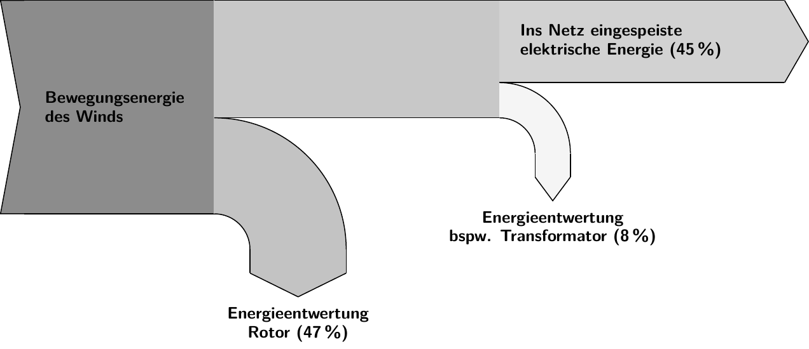
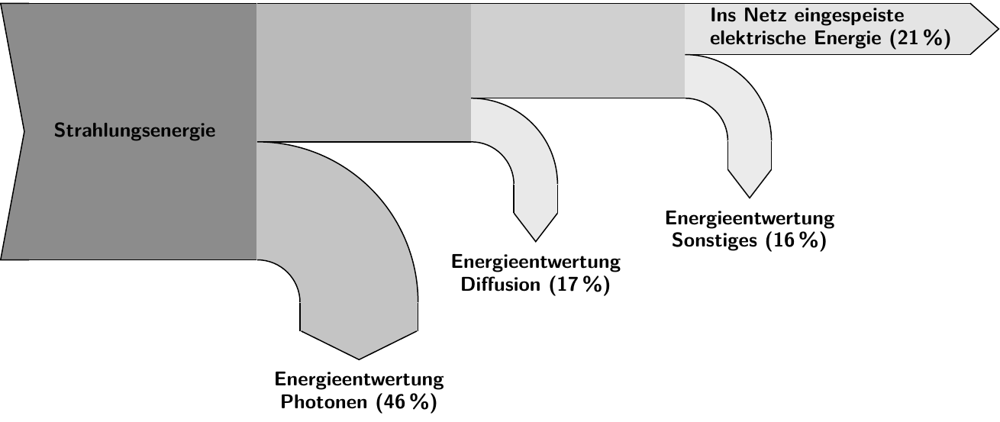
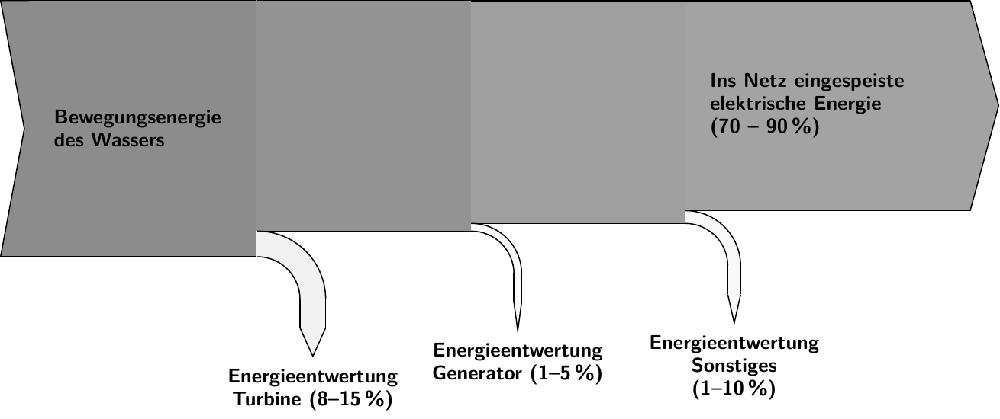

4 Energiewandler
4.1 Erneuerbare Energien
Die Treibhausgasemissionen des Energiesektors sollen drastisch reduziert werden, um die Klimaneutralität zu erreichen. Die Politikerinnen und Politiker eines Bezirks in Norddeutschland fordern daher, den Energiebedarf des Bezirks vollständig durch erneuerbare Energien abzudecken.
Konkret wird beraten, ob hierzu der Bau
- eines Windenergieparks,
- eines Solarparks oder
- einer Wasserkraftanlage
als Energiewandler gezielt gefördert werden soll.
Diskutiere die genannten Energieträger vor dem Hintergrund des Klimawandels. Verwende insgesamt mindestens drei Kriterien aus den Materialien.
Hinweise
- Empfiehl in deiner Einleitung eine Handlungsoption.
- Formuliere in jedem Argument eine Behauptung aufbauend auf einem Kriterium, nenne passende Fakten und erkläre, warum die Fakten deine Behauptung stützen.
- Berücksichtige in jedem Argument alle Handlungsoptionen.
- Vergleiche in deinem Schluss die Bedeutsamkeit der Kriterien für deine Entscheidung.
4.2 Kriterienübersicht
| Kriterium | Windpark | Solarpark | Wasserkraftanlage |
|---|---|---|---|
| Wirkungsgrad | 45 % | 21 % | 70 - 90% |
| Jahresertrag | 40 GWh pro Jahr 4,000 Volllaststunden |
19 GWh pro Jahr 1,900 Volllaststunden |
39 GWh pro Jahr 3,900 Volllaststunden |
| Lokale Emission | Hör- und In fraschallSchattenwurf | Keine | Hör- und Infraschall |
| Lebensdauer | 20 Jahre | 30 Jahre | 80 Jahre |
| Preis | 14 Mio. € | 6 Mio. € | 59 Mio. € |
| Treibhausgas- emissionen |
8,800 t CO2-Äquivalente |
35,000 t CO2-Äquivalente |
12,000 t CO2-Äquivalente |
4.3 Begrifflichkeiten
Alle drei Energiewandler (in der Alltagssprache Kraftwerke) werden den erneuerbaren Energien zugerechnet, da sie keine fossilen Energieträger bzw. Kernbrennstoffe benötigen. Der geplante Energiewandler soll 12.000 Haushalte mit Strom versorgen können. Der Energiebedarf von 12.000 Haushalten wird auf 15,6 Gigawattstunden pro Jahr (GWh/a) geschätzt.
Die drei Energiewandler haben die gleiche theoretische Leistung, d. h. wenn sie “rund um die Uhr” unter voller Auslastung betrieben werden könnten.
Windpark: Der geplante Windpark soll an Land entstehen und umfasst zwei Windenergieanlagen (Windkraftanlagen). Windenergieanlagen wandeln mithilfe eines Generators die Bewegungsenergie des Windes in elektrische Energie um.
Solarpark: Der geplante Solarpark (Fotovoltaik-Freiflächenanlage) soll an Land entstehen und umfasst 25.000 Solarmodule. Solarmodule bestehen aus monokristallinen Siliziumsolarzellen und wandeln Strahlungsenergie der Sonne in elektrische Energie um.
Wasserkraftanlage: Die geplante Wasserkraftanlage soll an einem naheliegenden Fluss entstehen. Der Fluss müsste hierfür durch ein Wehr aufgestaut und reguliert werden. Eine Wasserkraftanlage wandelt mithilfe von Turbinen die Bewegungsenergie des Wassers in elektrische Energie um.
4.4 Kriterium 1: Wirkungsgrad
Der Wirkungsgrad gibt an, wie effizient der Energiewandler arbeitet. Er gibt das Verhältnis aus der in das Stromnetz eingespeisten elektrischen Energie und der zugeführten Energie (Bewegungsenergie des Winds, des Wasser bzw. Solarenergie) an und ist somit immer kleiner als 100 %. Je höher der Wirkungsgrad ist, desto weniger Energie wird während des Prozesses an die Umgebung abgegeben. Im Nachfolgenden werden die Energiekette für die drei Energiewandler gezeigt.


4.5 Kriterium 2: Jahresertrag
Der prognostizierte Jahresertrag hängt von der Anzahl der Volllaststunden sowie u. a. Wartungsarbeiten und Betriebsausfällen ab. Je höher die Anzahl der Volllaststunden ist, desto höher fällt der Jahresertrag aus. Die Volllaststunden bezeichnen die Zeit, für die eine Anlage bei Nennleistung (hier 10 MW) betrieben werden müsste, um den angenommenen Jahresertrag zu erzielen. Je höher die Anzahl der Volllaststunden, desto effektiver kann der Energiewandler betrieben werden. Das Maximum an Volllaststunden beträgt in einem Jahr 8760 Stunden. Abweichungen von dem Maximum sind auf Einschränkungen bspw. durch Schwankungen der Windgeschwindigkeit, der Sonneneinstrahlung bzw. Fließgeschwindigkeit des Wassers zurückzuführen.
Die Windgeschwindigkeit (Windpark) unterliegt ständigen Schwankungen. Diese ist zum einen saisonal (höhere Windgeschwindigkeiten im Herbst bis Frühjahr), zum anderen tagesvariabel. Die Schwankungen sind nicht periodisch und eine Vorhersage der Windgeschwindigkeit ist ungenau. Windgeschwindigkeitsminima können nicht durch eine Regulierung ausgeglichen werden.
Die Intensität der Sonneneinstrahlung (Solarpark) unterliegt ständigen Schwankungen. Der überwiegende Teil der Schwankungen ist periodisch, d. h. saisonal und tageszeitabhängig. Dieser Anteil der Schwankungen lässt sich gut berechnen. Ein kleinerer Teil der Schwankungen ist nicht periodisch (bspw. Verschattung durch Bewölkung) und eine Vorhersage dieses Anteils ist ungenau. Sonneneinstrahlungsminima können nicht durch eine Regulierung ausgeglichen werden.
Der Wasserdurchfluss in einer Wasserkraftanlage unterliegt nur vernachlässigbaren jahreszeitbedingten Schwankungen, die auf höhere Niederschlagsmengen im Herbst bis Frühjahr undSchneeschmelzen zurückzuführen sind. Die Menge des Wasserdurchflusses lässt sich regeln, sodass diese Schwankungen ausgeglichen werden können.
4.6 Kriterium 3: Lokale Emissionen
Lokale Emissionen wie Geräusche oder Schattenwurf können als störend empfunden werden.
Windenergie- und Wasserkraftanlagen emittieren Hör- und Infraschall. Die Störung durch Hörschall wird individuell unterschiedlich wahrgenommen. Messungen ergaben in einer Entfernung von 1 km für Windenergie- bzw. Wasserkraftanlagen des gleichen Typs eine Lautstärke von 30 dB. Studien ergaben, dass die Mehrheit der in der Nähe eines vorhandenen Windparks bzw. einer Wasserkraftanlage befragten Personen die Geräusche als nicht belästigend empfanden.
Windenergieanlagen verursachen zudem eine Verschattung. Durch die Bewegung der Rotorblätter entsteht bei Sonnenlicht ein periodischer Schattenwurf, der bis zu 2.800 m betragen kann. Der Schattenwurf wird insbesondere durch die Anwohner als störend empfunden und kann Kopfschmerzen, Nervosität, Übelkeit und Schlafstörungen hervorrufen.
4.7 Kriterium 4: Lebensdauer
Aufgrund von Abnutzungseffekten besitzen die Energiewandler nur eine begrenzte Lebensdauer.
Windenergieanlagen unterliegen einer hohen mechanischen Belastung, die bspw. zum Verschleiß oder schlimmstenfalls zur Zerstörung von Rotorblättern und Getriebe führen kann. Das Fundament der Windenergieanlagen könnte bei Erneuerung der Anlagen jedoch wiederverwendet werden.
Solaranlagen weisen neben dem Verschleiß während ihrer Lebensdauer eine Ertragsminderung von ca. 5 % aufgrund von Modulausfall auf.
Wasserkraftanlagen können bis zu 80 Jahre lang betrieben werden, bis das Bauwerk erneuert werden muss. Die elektrischen Anlagen wie die Turbinen müssen jedoch bereits nach ca. 40 Jahren erneuert werden.
4.8 Kriterium 5: Preis
Die Investitionen setzen sich aus den Aufwendungen ab Werk, den Kosten für Transport und Montage, für das Fundament und für die Netzanbindung sowie den sonstigen Kosten zusammen. Die Kostenstruktur wird dabei entscheidend von der Größe der Anlage sowie den örtlichen Gegebenheiten bestimmt. Aufgrund neuer Herstellungsverfahren unterliegen die Preise für Solaranlagen einem stetigen Preisverfall (zwischen 2012 und 2019 um rund 62 %), sodass die Kosten des Solarparks niedriger als kalkuliert ausfallen könnten.
4.9 Kriterium 6: Treibhausgasemissionen
CO2-Äquivalente ist eine Größe zur Vereinheitlichung der Klimawirkung der unterschiedlichen Treibhausgase und wird in der Einheit Tonne (t) angegeben.Die Treibhausgasemissionen berechnen sich aus der Fertigung, dem Betrieb sowie dem Rückbau. Hinsichtlich der Treibhausgasemissionen während des Betriebs wird von der erwarteten Lebensdauer ausgegangen. Treibhausgasemissionen während des Betriebs können bspw. durch Wartungsarbeiten hervorgerufen werden.
Bei dem Windenergiepark sind ca. 64 % der Treibhausgasemissionen auf die Fertigung zurückzuführen (davon entfallen 42 % auf den Turm und 27 % auf den Generator und Rotor).
Bei dem Solarpark sind ca. 95 % der Treibhausgasemissionen auf die Fertigung zurückzuführen (davon entfallen 83 % auf die Modulherstellung).
Bei der Wasserkraftanlage sind ca. 64 – 76% der Treibhausgasemissionen auf den Bau zurückzuführen. Zudem gilt, dass für den Betrieb von Wasserkraftanlagen Wasser aufgestaut werden muss. Organisches Material zersetzt sich dabei auf dem Grund des Flusses unter Sauerstoffmangel, wodurch Methan (ein starkes Treibhausgas) entsteht, welches beim Durchfließen der Wasserkraftanlage freigesetzt wird.